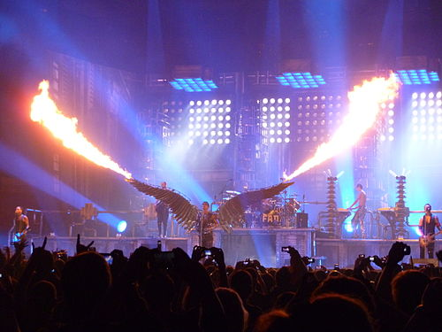

Rammstein (нем.; МФА: [ˈʀamʃtaɪ̯n]) — немецкая метал-группа, образованная в январе 1994 года в Берлине. Музыкальный стиль группы относится к жанру индастриал-метала (конкретно — его немецкой сцене Neue Deutsche Härte). Основные черты творчества группы: специфический ритм, в котором выдержана большая часть композиций, и эпатирующие тексты песен. Особую известность группе принесли сценические выступления, часто сопровождаемые использованием пиротехники, получившие признание в музыкальной среде. Состав группы ни разу не менялся.
28 августа 1988 года на авиабазе Рамштайн во время авиашоу с участием итальянской авиационной группы высшего пилотажа Frecce Tricolori произошло столкновение трёх самолётов, в результате которого погибли 70 человек и больше трёхсот получили ранения (об этой трагедии рассказывает одноимённая песня «Rammstein» из дебютного альбома группы Herzeleid). Согласно одной из версий, музыкантам Rammstein не было известно об этой трагедии, когда они придумали название группы.
Истоки Rammstein лежат в периоде, предшествовавшем и сопутствовавшем объединению Германии. Сооснователь группы и ведущий гитарист Рихард Круспе свою музыкальную карьеру начал в 1989 году в Западной Германии в группе Orgasm Death Gimmick, переехав туда из Шверина (тогдашняя ГДР), куда вернулся после падения Берлинской стены. Круспе, поклонник Kiss, искал возможности соединить любимый им хард-рок с электронным звучанием индастриала. Примерно в это время он познакомился с Тиллем Линдеманном (в то время — барабанщиком панк-группы First Arsch), а позднее с Оливером Риделем (бас-гитара) и Кристофом Шнайдером (ударные) из групп The Inchtabokatables и Die Firma соответственно. В этом составе (с Линдеманном как вокалистом и сочинителем песен) они стали играть под названием Rammstein.
Стиль музыки Rammstein, который сами музыканты в шутку окрестили «танц-метал» (нем. Tanzmetall), преимущественно представляет собой индастриал-метал в духе новой немецкой тяжести. Однако он смешивает элементы как и электронного индастриала, так и альтернативного метала, и других жанров. Многие композиции выдержаны в одном ритме (за что Rammstein и назвали свой стиль «танц-метал»), встречаются и более сложные композиции. Музыканты отрицают непосредственное влияние группы Kraftwerk: «Нам они никогда не нравились». Творчество группы также относят к таким стилям рок-музыки, как хард-рок, готик-метал, ню-метал, симфоник-метал, прогрессивный метал и альтернативный метал.
Уже в начале существования группы со стороны СМИ некоторых стран, и в первую очередь немецких, в адрес музыкантов часто высказывались обвинения в праворадикальных тенденциях. Причиной для этого послужили шоу Rammstein, выдержанные в стиле нацистской Германии, тексты песен, смысл которых можно истолковать двояко, преобладающая тематика насилия и брутальности. Критика усилилась после того, как в 1998 году был снят видеоклип на сингл «Stripped» с использованием фрагментов документальных фильмов Лени Рифеншталь «Олимпия» (фильм об XI летних Олимпийских играх 1936 года в Берлине). Несмотря на то что некоторые фрагменты из клипа были удалены, обвинения в адрес группы о распространении «фашистоидных» взглядов и идеализации «национал-социалистической» эстетики продолжались. На телевидении было запрещено показывать этот клип раньше 22 часов вечера. Позже Линдеманн признался, что это было провокацией, они перешагнули границу, и такого больше не повторится.
Песня Kraftwerk «Das Model» с альбома Die Mensch-Maschine была записана в 1997 году на отдельном сингле. К ней был снят клип, однако участникам группы он не понравился и в итоге не был показан нигде. Песня Depeche Mode «Stripped» с альбома Black Celebration была записана в 1998 году для трибьют-альбома For the Masses и выпущена позднее синглом; видеоклип на неё был снят с использованием фрагментов документальных фильмов Лени Рифеншталь «Олимпия». Ramones — «Pet Sematary», записанная совместно с шведской группой ClawFinger во время Mutter-тура, вошла на сингл «Ich will». Ария — «Штиль». Сингл «Schtiel» был выпущен в 2003 ограниченным тиражом в честь 100-летия «Harley Davidson». Диск был озаглавлен как «сольный» сингл Линдеманна и Круспе, однако вскоре его изъяли из продажи по причине нарушения прав лейбла Universal Records. Песня «Helden», исполненная Тиллем Линдеманном совместно с группой Apocalyptica, является кавером на песню «Heroes» Дэвида Боуи на немецком языке.
В 2002 году Тилль выпустил сборник своих стихов под названием «Messer». Концепция сборника такая же, как и у текстов для группы — но Тилль проводит чёткую границу между индивидуальным творчеством и коллективным. Изначально книга выходила в двух изданиях, но небольшими тиражами. Однако интерес к сборнику был таков, что позднее тираж был повторён, однако только в самом дорогом варианте. В 2018 году Тилль, совместно с Петером Тэгтгреном объявил о туре по России, Украине и Казахстану, в котором они представят книгу «Messer» на русском языке, а также исполнят песни с дебютного альбома группы Lindemann — Skills in Pills. Специально для этой книги была проведена фотосессия, где автор книги предстаёт в образе манекена. Авторами фотографий выступили Герт Хоф (нем. Gert Hof) и Йенс Роцш (нем. Jens Rotzsch).
Если вам понравилась статья вы можете узнать о нас больше
Если же вы в чем то не согласны можете с нами связаться